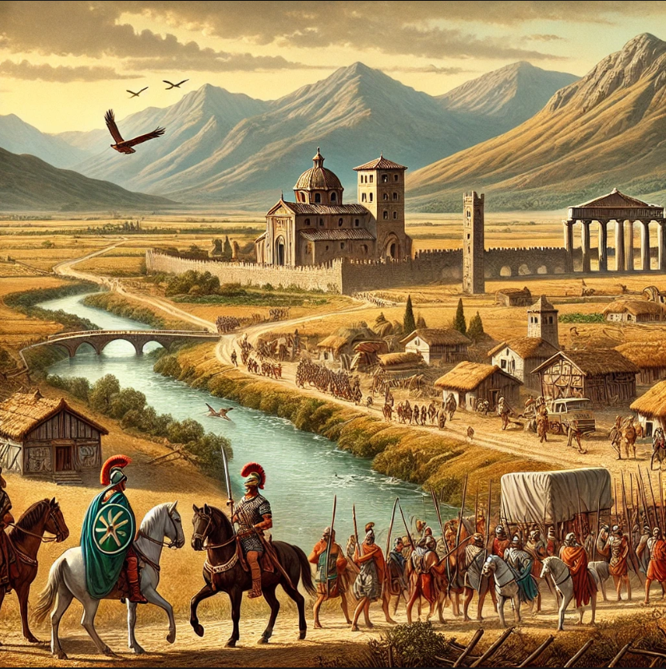
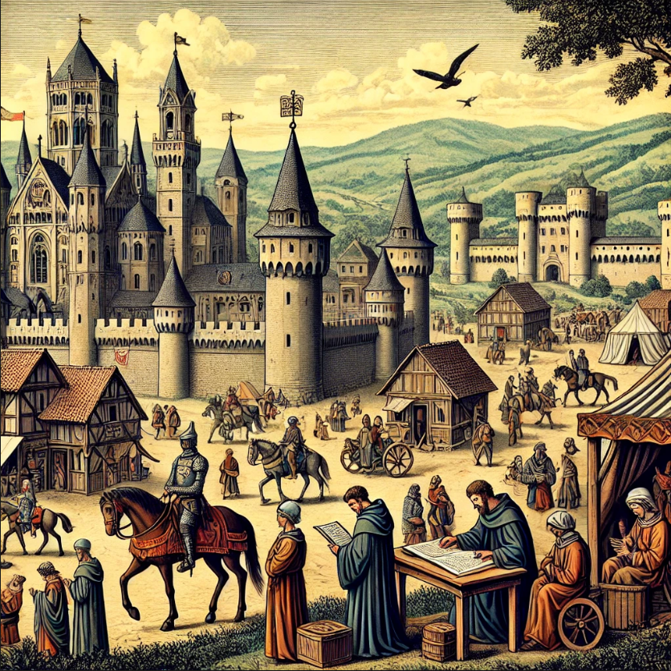
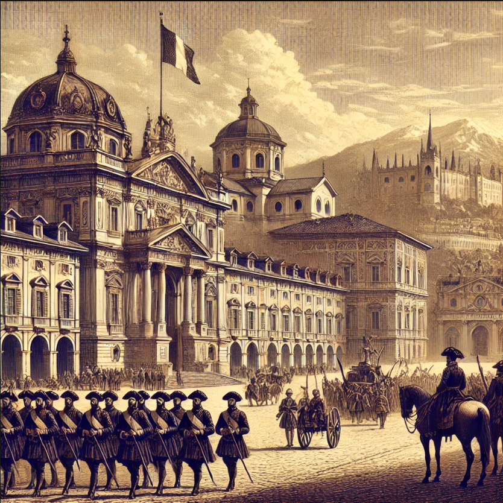
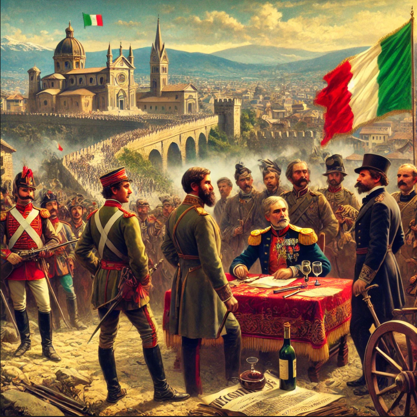
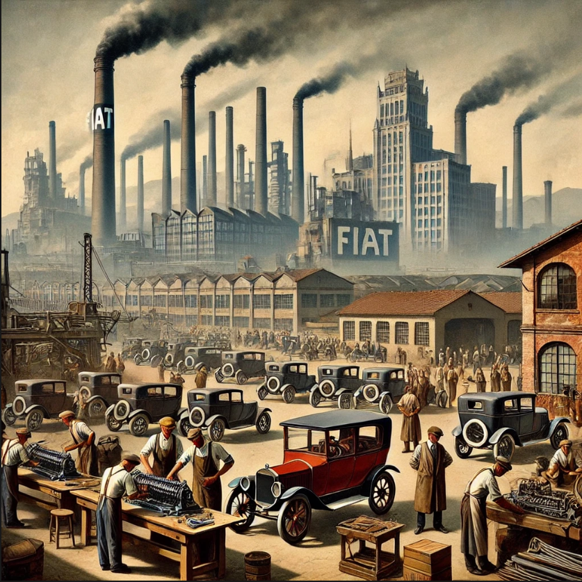
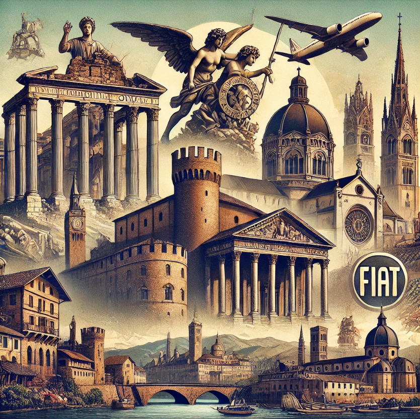

L'Histoire du Piémont : Un Passé Riche et Fascinant


Des Origines Anciennes
Le Piémont, dont le nom signifie « au pied des montagnes », a une histoire riche qui remonte à l’Antiquité. Peuplé à l’origine par des tribus celto-ligures, il fut intégré à l’Empire romain au Ier siècle avant J.-C. Turin, aujourd’hui capitale de la région, fut fondée sous le nom d’Augusta Taurinorum. La région prospéra sous l’influence romaine grâce à son agriculture florissante et au développement des routes commerciales reliant l’Italie à la Gaule. Avec la chute de l’Empire romain d’Occident en 476, le Piémont subit les invasions successives des Ostrogoths, des Byzantins, puis des Lombards au VIe siècle. Ces derniers installèrent un pouvoir structuré, favorisant l’implantation de villages fortifiés et de monastères, éléments-clés du développement économique et religieux de la région.
Le Moyen Âge et l’essor des États Féodaux
Après la conquête carolingienne du VIIIe siècle, le Piémont fut intégré à l’Empire carolingien, mais se fragmenta progressivement en seigneuries indépendantes à la suite de la dissolution de cet empire. Durant cette période, de nombreuses familles féodales se disputèrent le contrôle des terres. Parallèlement, l’Église joua un rôle fondamental dans la structuration du territoire, en établissant des monastères influents, comme celui de la Sacra di San Michele, symbole du patrimoine médiéval piémontais. Au XIe siècle, la maison de Savoie, originaire des Alpes, commença à asseoir son pouvoir sur la région. En 1416, Amédée VIII prit le titre de duc de Savoie, amorçant la domination savoyarde qui allait durer plusieurs siècles. La ville de Turin se développa alors comme un centre politique et économique incontournable.


La Maison de Savoie et l’Unification Italienne
Pendant la Renaissance, le Piémont se retrouva au cœur des conflits entre la France et le Saint-Empire romain germanique. Charles Quint accorda finalement à la Savoie un rôle stratégique au sein de l’Empire, et au XVIe siècle, Turin devint la capitale du duché. La ville se modernisa grâce à l’architecture baroque, encore visible aujourd’hui dans ses palais et églises. Sous le règne de Victor-Amédée II au XVIIe siècle, le Piémont affirma son autonomie. Grâce au traité d’Utrecht de 1713, le duché acquit la Sicile, échangée peu après contre la Sardaigne, donnant naissance au royaume de Sardaigne-Piémont. Ce royaume devint l’un des plus puissants d’Italie et prépara l’unification du pays au XIXe siècle. Le XIXe siècle fut marqué par l’essor du mouvement nationaliste italien, connu sous le nom de Risorgimento. Le Piémont et son roi Victor-Emmanuel II, sous l’influence de son Premier ministre Camillo Benso di Cavour, jouèrent un rôle central dans la lutte pour l’unification italienne. Après avoir combattu l’Autriche lors des guerres d’indépendance italiennes, le royaume de Sardaigne-Piémont annexa progressivement les autres États italiens. En 1861, Victor-Emmanuel II fut proclamé premier roi d’Italie, avec Turin comme première capitale du pays avant son transfert à Florence, puis à Rome.
Le XXe Siècle et l’Ère Industrielle
Le Piémont entra de plain-pied dans l’ère industrielle avec l’essor de grandes entreprises, notamment Fiat, fondée à Turin en 1899. L’industrialisation transforma profondément la société piémontaise en attirant une forte immigration ouvrière, notamment du sud de l’Italie. Durant la Seconde Guerre mondiale, la région fut un bastion de la Résistance italienne contre le régime fasciste de Mussolini et l’occupation nazie. Après la guerre, le Piémont connut une reconstruction rapide et devint un moteur économique essentiel de l’Italie grâce à son industrie automobile, son secteur technologique et son agriculture dynamique.

Le Piémont Aujourd’hui : Entre Tradition et Modernité
Aujourd’hui, le Piémont est une région dynamique qui allie tradition et modernité. Réputée pour son vin (Barolo, Barbaresco), sa truffe blanche d’Alba et sa gastronomie raffinée, elle attire les amateurs de culture et de nature. Avec ses sites classés au patrimoine mondial de l’UNESCO, ses stations de ski alpines et ses villes historiques, le Piémont reste un territoire riche et incontournable en Italie.
